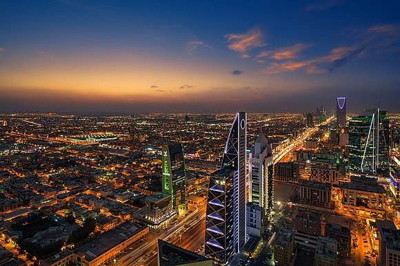

Riyadh
Riyadh is the capital of Saudi Arabia and the largest city on the Arabian Peninsula. Located in the center of the an-Nafud desert, on the eastern part of the Najd plateau, the city sits at an average of 600 metres (2,000 ft) above sea level, and receives more than 16 million tourists each year, making it the 2nd most visited city in the Arab world. Riyadh had a population of 7.6 million people in 2019, making it the most populous city in Saudi Arabia, 2nd most populous in the Arab world (after Cairo), and 38th most populous in Asia.
Riyadh also holds great economic significance, as it hosts the headquarters of many banks and major companies, such as the National Commercial Bank (NCB), Alinma Bank and the Saudi Arabian British Bank (SABB). Highway 65, known locally as the King Fahd Road, runs through some of these important centers in the city, including the King Abdullah Financial District, one of the world's largest financial districts, the Faisaliyah Center and the Kingdom Center. Riyadh is one of the world's fastest-growing cities in population and is home to many expatriates. Riyadh has been designated a global city.
Riyadh is the political and administrative centre of Saudi Arabia. The Consultative Assembly (also known as the Shura or Shura Council), the Council of Ministers of Saudi Arabia, the King and the Supreme Judicial Council of Saudi Arabia are all situated in the city. Alongside these four bodies that form the core of the legal system of Saudi Arabia, the headquarters of other major and minor governmental bodies are also located in Riyadh.
• For more information go to wikipedia page